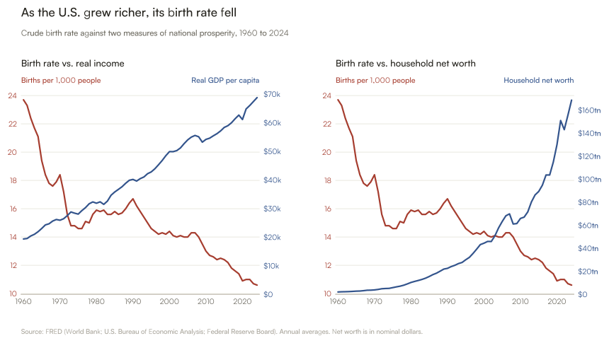

Birth, Wealth, and Income Analysis
data-viz
python
demographics
economics
wealth
income
How the U.S. birth rate has moved as national income and household wealth grew, 1960 to today.
Overview
Do richer countries have fewer children? This project looks at one country over time: the United States from 1960 to 2024. It sets the crude birth rate (births per 1,000 people) against two measures of national prosperity, real GDP per person and total household net worth.
Key Findings
- The birth rate more than halved. It fell from 23.7 births per 1,000 people in 1960 to 10.6 in 2024.
- Income more than tripled. Real GDP per person rose from $19,365 to $68,788.
- Wealth grew far faster. Household net worth went from $2.1 trillion to $169 trillion, in nominal dollars.
- The two move in opposite directions. The birth rate’s correlation with income is -0.87 and with net worth -0.78.
Reading the Numbers
- National totals, not families. These are country-wide figures. They say nothing about whether richer households have fewer children.
- Correlation, not cause. All three series trend over the whole period, so a strong correlation is close to guaranteed. Education, contraception, women’s work, housing costs and age at marriage all moved over the same years.
- Nominal wealth. Net worth is not adjusted for inflation, while GDP per person is. Part of the rise in wealth is rising prices.
- The birth-rate series starts in 1960, so the post-war baby-boom peak is only partly shown.
Data and Code
The data comes from FRED: the World Bank crude birth rate (SPDYNCBRTINUSA), BEA real GDP per capita (A939RX0Q048SBEA), and Federal Reserve household net worth (HNONWRA027N), averaged to calendar years. The notebook downloads and caches them.
The code is on GitHub.